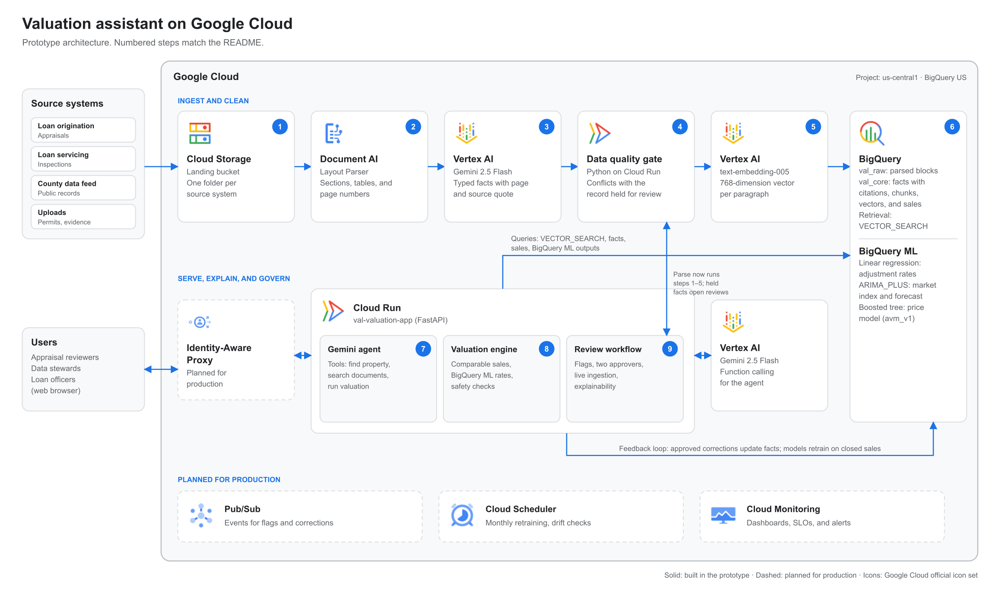

| Prepared for | Valuation and data leadership, [Customer] (name withheld) |
| Prepared by | Jack Bradham, Practice Customer Engineer, Cloud AI, Google Cloud |
| Status | Draft for discussion |
| Last updated | October 5, 2026 |
| Related material | Technical evaluation deck; source code at github.com/jackbrad/valuation-assistant-gcp; live prototype on Cloud Run (link shared separately) |
Confidentiality: This document describes a prototype built on synthetic data. It contains no customer data. Prices are Google Cloud list prices as of October 2026 and are estimates, not a quote.
Your valuation teams need fast answers they can defend. The evidence behind those answers sits in unstructured PDFs (appraisals, inspections, and permits) spread across systems that don't share data. Standard retrieval-augmented generation (RAG) can retrieve that text, but it doesn't preserve page-level citations, it doesn't reconcile documents with your system of record, and it leaves arithmetic to the language model.
To show a path forward, we built a working prototype on Google Cloud in two days. The prototype does the following:
This document records what the prototype includes, the design decisions behind it, what it deliberately leaves out, and what a production deployment needs. Use the FAQ section to review gaps before you plan a pilot.
For a single property in the prototype data set, the county record lists 1,240 sq ft of living area. Page 2 of a 2025 inspection report, stored in the loan-servicing system, documents a permitted 840 sq ft addition completed in 2024. No system reconciles the two. As a result, every automated value for this property, and for neighboring properties that used its sale as a comparable, is understated.
The prototype was built in two phases over October 3 and 4, 2026.
| Phase | Work completed |
|---|---|
| Phase 1: Foundation (October 3) |
|
| Phase 2: Pipeline, agent, and experience (October 4) |
|
| Capability | What a user sees |
|---|---|
| Ask | A chat assistant answers questions such as "What's 14 Larkspur Ln worth? It's a refi." Follow-up questions keep context. Every document claim links to the source page. |
| Explain | Each answer shows the issues found by code, a six-step walkthrough of the valuation (comparable sales, market adjustment, feature adjustments, weighting, blending, and safety checks), the documents on file, and the agent's tool calls with their raw inputs and outputs. |
| Guard | When evidence conflicts, the value is withheld and the property is routed to an appraiser. A reviewer can flag a fact for correction with evidence attached. Two independent approvers are required. The person who flagged the fact and anyone with a stake in the loan can't approve it. |
| Ingest | A reviewer can parse a newly landed document from the interface. Each pipeline step is shown as it runs. If a parsed fact conflicts with the system of record, the data quality gate holds it and opens a review item. |
| Monitor | A model health page shows accuracy against sale prices for each neighborhood, and the stricter checks that apply when accuracy drifts. |
Figure 1 shows the prototype architecture. Numbered steps in the figure match the steps below. Dashed boxes are services planned for production.

Figure 1. Prototype architecture. Icons are from the official Google Cloud icon set.
The following steps describe the flow from a landed document to an answer:
text-embedding-005 embeds each paragraph. Blocks, facts, and chunks are written to BigQuery with load jobs.VECTOR_SEARCH, and run the valuation engine.| Decision | Rationale | Trade-off |
|---|---|---|
| Use BigQuery as the vector store instead of a separate vector database. | Vectors, extracted facts, and property records live in one governed store, so retrieval and conflict checks are joins. | At high query volume, move retrieval to Vector Search in Agent Platform. Only the retrieval function changes. |
| Use Document AI Layout Parser and Gemini instead of plain text extraction. | Preserves tables, sections, and page numbers, which makes page-level citation possible. | Adds a per-page parsing cost. Parsing is cached by content hash so each page is parsed once. |
| The language model explains; the engine computes. | Every number traces to a tool output and a reproducible calculation. | Requires more engineering than a prompt-only RAG approach. |
| Hold conflicting facts and require two approvers to change them. | Prevents one incorrect fact from affecting many valuations, and supports manipulation controls that regulators expect. | Some answers wait for a person. |
| Enforce guardrails in code, not only in the prompt. | When a value is withheld, the tool doesn't return the range to the model, so the model can't repeat it. | Requires tests for each guardrail. The prototype includes them. |
Each task uses the simplest model that meets the requirement, and valuation math stays in statistical models that an appraiser or a model validator can inspect. The evidence column shows results measured on the prototype. All data is synthetic, so these results show that the pipeline works, not how the models will perform on your data.
| Task | Model | Why this model | Alternatives considered | Evidence from the prototype |
|---|---|---|---|---|
| Agent: plan tool calls and write answers | Gemini 2.5 Flash, pinned | Reliable function calling, 5–10 seconds, and low cost in us-central1. The agent explains and cites; it doesn't compute, so it doesn't need the strongest reasoning model. | Gemini 3.8 Flash (evaluated, see evidence); Gemini Pro models (stronger reasoning, higher cost and latency); open models in Model Garden (more to operate) | All three tools called and the correct page cited in every test run; 5–10 seconds and about $0.0033 per answer (4 calls, 5,862 input and 607 output tokens). Gemini 3.8 Flash was evaluated on October 5, 2026: the same tool calls and citations, 9–19 seconds at a low thinking level, about $0.011 per answer, but its only available endpoint (global) returned timeouts on 6 of 6 calls that afternoon. The demo pins Gemini 2.5 Flash and switches with one configuration line once 3.8 Flash is stable in the region. |
| Extract typed facts from documents | Gemini 2.5 Flash with JSON output | Handles varied layouts and wording without labeled training data, and returns typed fields with a page and source quote. | Document AI Custom Extractor (more consistent on fixed forms such as standard appraisal forms, but needs labeled examples); Gemini 2.5 Flash-Lite (lower cost) | Extracted condition C4 from page 2 of a newly ingested inspection. Most extraction output is model thinking, so a capped thinking budget lowers cost. |
| Parse PDF layout | Document AI Layout Parser | Preserves sections, tables, reading order, and page numbers, and includes chunking. | Enterprise Document OCR (text only, no structure); Form Parser (key-value pairs, $30 per 1,000 pages); sending PDFs directly to Gemini (no stable page structure for citations) | Parsed a 2-page inspection into 11 blocks in about 3 seconds, with page numbers on every block. |
| Embed text for retrieval | text-embedding-005 (768 dimensions) | Strong English retrieval at low cost ($0.000025 per 1,000 characters), and works directly with BigQuery vector search. | gemini-embedding-001 (higher quality and multilingual, about 6 times the price per character) | For "Has the house been expanded?", the inspection paragraph about the addition ranked first (similarity 0.71–0.78), followed by the permit. |
| Feature adjustment rates for comparable sales | BigQuery ML linear regression, one model per neighborhood (adj_*_v1) | The coefficients are the adjustments an appraiser uses (dollars per square foot, per bedroom, per condition grade), so they're interpretable and auditable. One model per neighborhood captures local pricing. | Gradient-boosted trees with Shapley explanations (more accurate, less transparent); paired-sales analysis (manual) | Larkspur: R² 0.97 in BigQuery ML evaluation. Coefficients have the expected signs: $235 per sq ft, +$16,201 per bedroom, −$26,112 per condition grade worse. |
| Independent price estimate (AVM) | BigQuery ML boosted tree regressor (avm_v1) | Strong accuracy on tabular data with nonlinear effects, and per-prediction explanations with ML.EXPLAIN_PREDICT. | Agent Platform AutoML Tabular or custom XGBoost training; hedonic linear regression | On a time-based holdout of the most recent 4 months (199 sales): median absolute error 6.3%, 90th percentile 14%, R² 0.93. Not yet connected to the app; the app uses a formula (see FAQ). |
| Market index and time adjustment | BigQuery ML ARIMA_PLUS, one series per neighborhood (market_index_arima_v1) | Fits short monthly series, selects model order automatically, handles drift, and forecasts with intervals. | TimesFM through BigQuery AI.FORECAST (zero-shot foundation model, worth testing on sparse neighborhoods); Prophet | Selected ARIMA(0,1,1) for each neighborhood, with drift in three of four. The index uses a 3-month moving average of actual prices plus a 6-month forecast. |
| Rank candidate comparable sales | BigQuery ML boosted tree classifier (comp_ranker_v1) | Intended to learn which comparables reviewers keep or reject. | Rule-based similarity score (used instead) | Did not learn: ROC AUC 0.48 and recall 4%. The synthetic reviewer decisions carried no learnable signal and were imbalanced (11% accepted). The app doesn't use this model; it ranks comparables with a transparent similarity score (distance, recency, size, quality, and condition). |
Testing found the following issues. Each is fixed in the prototype and, where noted, covered by an automated test.
scripts/check_demo.py) now covers follow-up questions.The following measurements come from the prototype running on Cloud Run in us-central1.
| Measure | Result |
|---|---|
| Time from a landed PDF to searchable, cited facts (2-page document) | About 10 seconds |
| Time to answer a question (4 model calls, Gemini 2.5 Flash) | 5–10 seconds after warm-up; follow-up questions 2–6 seconds |
| Values shown while a value-moving fact is held | 0 |
| Approvers required to change a value-moving fact | 2, enforced by the server |
| Automated tests | 21 passing unit and integration tests, plus a 45-check end-to-end script run against the deployed app |
The following estimate uses Google Cloud list prices for us-central1 as of October 2026, and token counts measured on the prototype. It excludes staff and support costs.
| Item | Basis | Cost |
|---|---|---|
| Document AI Layout Parser | $10 per 1,000 pages | $0.0100 per page |
| Gemini 2.5 Flash extraction | About 1,000 input and 1,250 output tokens per page | $0.0034 per page |
text-embedding-005 | $0.000025 per 1,000 characters | $0.0001 per page |
| Total per page parsed | About $0.014 | |
| Gemini 2.5 Flash, per answer | 4 calls, 5,862 input and 607 output tokens (measured); $0.30 and $2.50 per 1M input and output tokens | $0.0033 per answer |
| Gemini 3.8 Flash, per answer (evaluated) | 4 calls, 6,065 input and about 275 output tokens (measured); $1.50 and $7.50 per 1M tokens | $0.011 per answer |
| BigQuery vector search | Within the 1 TiB monthly free tier at pilot volume | $0 |
Illustrative pilot. For one county with 100,000 pages of backlog and 20,000 questions a month, the estimate is about $1,350 one time to parse the backlog, and about $110 a month to run (answers about $66, one always-on Cloud Run instance about $44, BigQuery $0 within free tiers). On Gemini 3.8 Flash, answers would cost about $225 a month. These volumes are assumptions; we'll size the pilot with your actual volumes.
Cost per valuation. Each page is parsed once, so the first valuation of a property carries its parsing cost and later valuations don't.
| Scenario | Includes | Cost |
|---|---|---|
| First valuation of a typical loan file | About 60 pages parsed (an assumption: appraisal about 30, inspection about 25, permits about 5) plus one answer | About $0.85 |
| Re-valuation of a property already on file | One answer, a share of the Cloud Run instance, and a BigQuery vector search | About $0.005 |
Cost scales with documents, not with questions.
To reduce cost, consider a Document AI savings plan ($8 per 1,000 pages), a capped Gemini thinking budget for extraction, and parsing only new or changed documents.
Each answer describes what the prototype does today and what a production deployment needs.
Does the prototype use real customer data?
In the prototype: No. All data is synthetic, set in a fictional town (Cedar Hollow) with 1,200 properties, about 1,950 sales, and five generated PDF documents.
In production: Start with a data-sharing agreement, a de-identified pilot sample, and a decision on data residency.
How many documents does the prototype parse?
In the prototype: Five PDFs (two inspections, two appraisals, and a permit) are parsed through Document AI and Gemini, including one parsed live in the demo.
In production: Use Document AI batch processing from Cloud Storage. Trigger it with an Eventarc or Pub/Sub notification when a file lands, and add retries and a dead-letter queue.
How does the system handle scanned, skewed, or handwritten documents?
In the prototype: The demo PDFs are clean, digitally generated files.
In production: Use Document AI quality scores to route low-quality pages to Gemini multimodal reading or to a person, and track extraction accuracy for each document type.
How does the system match a document to the right property?
In the prototype: A manifest links each document to a property, and the assistant recognizes the five demo addresses by name.
In production: Implement entity resolution with address normalization, parcel number (APN) matching, and fuzzy matching. Send low-confidence matches to a review queue.
How does the system classify document types?
In the prototype: The manifest records each document type.
In production: Use a Document AI classifier or Gemini to label appraisals, inspections, permits, HOA documents, and disclosures, and to split combined PDFs.
Is the fact confidence score meaningful?
In the prototype: No. Every fact receives a placeholder confidence of 0.9.
In production: Compute confidence from Document AI layout confidence, a Gemini check against the source quote, and agreement across documents. Calibrate it against human review.
Which fields does the system extract?
In the prototype: Nine fields: living area, bedrooms, bathrooms, year built, lot size, condition, quality, unrecorded additions, and permit number.
In production: Extend the typed schema for each document type (for example, HOA dues, liens, disclosures, and roof age) and manage it under version control.
What happens when a document is updated or resent?
In the prototype: Parsing a document again replaces its rows.
In production: Keep every version. Store a content hash for each file so unchanged files are skipped, and keep facts bitemporal so you can answer "What did we know on the loan date?"
How does the system handle personal information?
In the prototype: It doesn't. The pii_findings field exists but is always 0.
In production: Run Sensitive Data Protection on every chunk before embedding, mask names and loan numbers, and apply BigQuery column-level security and policy tags.
Is the vector search indexed?
In the prototype: No. With fewer than 100 chunks, VECTOR_SEARCH scans every row, which is exact and fast.
In production: Create a BigQuery vector index when the table grows large, and move to Vector Search in Agent Platform if query volume requires millisecond latency.
Does the system use hybrid search or reranking?
In the prototype: No. It uses semantic search, filtered to one property.
In production: Add keyword matching for exact terms such as permit numbers and addresses, and rerank results with the ranking API in Agent Platform.
How do you measure answer quality?
In the prototype: Through unit tests and manual review during the build.
In production: Build an evaluation set of real questions with expected facts and citations. Score groundedness, citation accuracy, and refusal behavior with the Gen AI evaluation service in Agent Platform, and run it on every prompt or model change.
Can a document manipulate the model (prompt injection)?
In the prototype: Documents are passed to the model as data, but there's no dedicated defense.
In production: Screen inputs and retrieved text with Model Armor, and keep the rule that the model never produces a number on its own.
What happens when Gemini reaches a quota limit?
In the prototype: The app retries, falls back to Gemini 2.5 Flash in a different region, and then shows a saved answer with a clear label. The saved-answer fallback is for demos only.
In production: Use Provisioned Throughput for predictable load, and alert on quota errors.
Are answers and tool calls recorded?
In the prototype: Fact-level lineage is stored in BigQuery: the source document, page, source quote, extracting model, status, hold reasons, and timestamps. Answers and tool calls are shown in the interface but aren't stored.
In production: Write every answer to BigQuery with the question, user, model version, tool calls and outputs, cited pages, valuation ID, and latency, so every answer is reproducible and auditable.
Are model versions pinned?
In the prototype: The app pins gemini-2.5-flash (agent and extraction) and text-embedding-005 in config/settings.yaml. Gemini 3.8 Flash was evaluated and can be switched on with one line.
In production: Pin versions, re-embed all chunks when the embedding model changes, and test prompts against the evaluation set before an upgrade.
Does the app use the trained BigQuery ML valuation model?
In the prototype: Not yet. The app's price model is a formula: the neighborhood median price per square foot multiplied by living area, adjusted for bathrooms and condition. A trained gradient-boosted tree model, avm_v1, exists in BigQuery ML but isn't connected.
In production: Call avm_v1, retrain it on a schedule, and promote new versions through a champion-challenger evaluation.
Where do the adjustment rates come from?
In the prototype: From per-neighborhood linear regression models in BigQuery ML, with fixed fallback rates if they can't be loaded.
In production: Have an appraisal expert review the rates, and limit how much a rate can change in one retraining cycle.
When a fact is corrected, are dependent valuations updated?
In the prototype: The corrected property is re-valued. Re-valuing other properties that used it as a comparable is designed but not implemented.
In production: Find every valuation that used the corrected sale as a comparable, re-run it, and notify the owners of any value that changes.
Is market drift monitoring live?
In the prototype: No. The drift in the Riverside neighborhood is seeded data.
In production: Run a scheduled Cloud Run job that compares recent sale prices with the values shown before listing, and tightens the safety checks automatically.
How does the design address model risk management and fair lending?
In the prototype: These are out of scope. The design supports them because values come from a deterministic, explainable engine rather than the language model.
In production: Provide model validation documentation, test for bias and disparate impact across neighborhoods, and enforce appraisal independence requirements.
Can a licensed appraiser sign off on a value?
In the prototype: The sign-off step is designed and has a BigQuery table, but the interface doesn't include it.
In production: Add appraiser sign-off with credential verification, an electronic signature, and a locked record.
Why doesn't the language model calculate the value?
In the prototype: Language models generate plausible numbers, not reproducible ones, and a lender has to trace every value to its inputs. The valuation engine computes; Gemini explains. When the engine withholds a value, the tool doesn't return the range, so the model can't state it.
In production: Keep this separation. It lets you validate the valuation models under your model risk management process without validating a language model's arithmetic.
Why BigQuery ML instead of custom training on Agent Platform?
In the prototype: The training data already lives in BigQuery. BigQuery ML trains, evaluates, explains, and serves models in SQL, without moving data or running training infrastructure.
In production: Keep BigQuery ML for the regression adjustments, the market index, and the first AVM. Move a model to Agent Platform (AutoML Tabular or custom training) only if it needs a model type or tuning that BigQuery ML doesn't support. Register models in Model Registry in Agent Platform either way.
Why Gemini 2.5 Flash when Gemini 3.8 Flash is available?
In the prototype: We evaluated Gemini 3.8 Flash for the agent on October 5, 2026. It made the same tool calls and citations, took 9–19 seconds per answer at a low thinking level (16–62 seconds at the default level), and cost about $0.011 per answer, about 3 times Gemini 2.5 Flash. It's served only from the global endpoint for this project, and that afternoon 6 of 6 calls timed out. The demo pins Gemini 2.5 Flash in us-central1: 5–10 seconds, about $0.0033 per answer.
In production: Pin model versions, evaluate each new release against the evaluation set for accuracy, latency, reliability, and cost, and switch with a configuration change once it wins. Test a Pro model for complex multi-document questions.
Why linear regression for adjustments when boosted trees are more accurate?
In the prototype: Adjustments must be explainable to an appraiser and a regulator. A regression coefficient is the adjustment ("$235 per square foot"); a tree ensemble needs a separate explanation method.
In production: Keep regression for adjustments, use the boosted tree model as an independent check, and investigate when the two disagree (the prototype already withholds the value when the gap is too large).
Why ARIMA_PLUS for the market index? Did you consider TimesFM?
In the prototype: ARIMA_PLUS fits short monthly series per neighborhood with automatic model selection. TimesFM, available in BigQuery through AI.FORECAST, was considered but not tested.
In production: Back-test both on the customer's history. TimesFM needs no training and can help in neighborhoods with few sales.
Why did the comparable-sales ranker fail, and what replaces it?
In the prototype: It was trained on 6,000 synthetic reviewer decisions that carried no real signal, with only 11% positive labels. It scored ROC AUC 0.48, which is no better than chance, so the app doesn't use it. Comparables are ranked by a transparent similarity score instead.
In production: Train the ranker on real reviewer keep-or-reject decisions, use class weights for the imbalance, and promote it only if it beats the similarity score on held-out decisions.
How do you know the models are accurate enough?
In the prototype: The AVM uses a time-based holdout (the most recent 4 months) and reports median absolute error of 6.3% on synthetic data. The safety checks withhold a value when comparables are too spread out or disagree with the price model.
In production: Measure median absolute percentage error and bias for each neighborhood against new closed sales, keep a gold set of corrected properties, and promote a new model only when it beats the current one (champion-challenger).
How often are the models refreshed, and how do corrections feed back?
In the prototype: Models were trained once. Corrections update facts immediately, and the engine re-runs with the corrected fact.
In production: Retrain the AVM and adjustment models monthly and the market index as new sales close, with scheduled queries or pipelines in Agent Platform. Closed sales are the only training labels. Reviewer overrides feed evaluation and gate tuning, never training, so a mistaken override can't teach the model.
How do users authenticate?
In the prototype: They don't. A menu switches between four fictional users.
In production: Use Identity-Aware Proxy with Google identities, and assign roles (reviewer, data steward, loan officer, and appraiser) from groups.
What permissions does the service use?
In the prototype: The Cloud Run service account has the Owner role, which is broader than needed.
In production: Grant least-privilege roles: BigQuery Data Editor and BigQuery Job User on specific datasets, Document AI API User, the Agent Platform user role (roles/aiplatform.user), and Storage Object Viewer on the landing bucket.
Where are flags, approvals, and corrections stored?
In the prototype: In memory, on a single Cloud Run instance. The BigQuery tables for them exist in the val_ops dataset but aren't written to. The Pub/Sub topics exist but have no subscriptions.
In production: Write flags, decisions, and corrections append-only to BigQuery, and publish events to Pub/Sub so downstream systems can react.
Which data protection controls are in place?
In the prototype: Google Cloud default encryption.
In production: Add VPC Service Controls around BigQuery, Agent Platform, and Document AI; customer-managed encryption keys if required; a defined data residency region; retention and deletion policies; and Cloud Audit Logs exported to a locked bucket.
Is the two-approver rule enforced?
In the prototype: Yes. The server rejects approvals from the person who flagged the fact and from the loan officer, and automated tests cover both cases.
In production: Source conflict-of-interest data from the loan origination system instead of a fixed setting.
How is the prototype deployed?
In the prototype: From a workstation with gcloud run deploy --source. Terraform files exist in the repository but haven't been applied; resources were created with SDK scripts.
In production: Manage all infrastructure with Terraform, deploy through Cloud Build, use separate development, test, and production projects, and scan images in Artifact Registry.
How is the service monitored?
In the prototype: With a health check only.
In production: Add Cloud Monitoring dashboards and alerts for latency, errors, quota errors, ingestion backlog, and the rate of held facts. Define service level objectives, for example "95% of answers in under 10 seconds."
How does the service scale and recover from failure?
In the prototype: One instance in one region, without load testing.
In production: Autoscale Cloud Run after state moves to BigQuery, load-test to expected peak, and document recovery objectives and a regional failover plan.
How are costs controlled?
In the prototype: There are no budgets or alerts.
In production: Set budgets and alerts, cache parsing by content hash, cap the Gemini thinking budget for extraction, and use batch pricing for backlogs.
How does the assistant fit into existing workflows?
In the prototype: It's a standalone web app.
In production: Integrate with the loan origination and servicing systems through APIs or events, so documents arrive automatically and answers appear where underwriters already work.
Has the interface been tested for accessibility and usability?
In the prototype: It follows a design system with contrast, keyboard focus, and light and dark themes, but it hasn't had an accessibility audit or usability testing.
In production: Complete both with appraisal reviewers.
| Timeline | Phase | Scope |
|---|---|---|
| Days 0–30 | Pilot | One county and a de-identified sample of real documents. Success criteria: extracted facts match appraiser review, and fewer valuations require rework. |
| Days 30–90 | Harden | Identity-Aware Proxy and least-privilege IAM, persistent review state and answer logs in BigQuery, the avm_v1 model connected, and an evaluation set. |
| Day 90 onward | Scale | Document AI batch processing, more counties and document types, and drift monitoring for each neighborhood. |
Decision needed: Which county and which document types should the pilot start with?
| Service | Resources |
|---|---|
| Cloud Storage | Landing, evidence, and cache buckets |
| Document AI | One Layout Parser processor (us) |
| Agent Platform | gemini-2.5-flash for the agent and extraction (gemini-3.8-flash evaluated); text-embedding-005 for embeddings |
| BigQuery | Four datasets: val_raw (landed documents and parser output), val_core (properties, sales, facts, chunks, and valuations), val_ml (training data and adjustment grids), and val_ops (governance tables). One Cloud resource connection to Agent Platform. |
| BigQuery ML | market_index_arima_v1 (ARIMA_PLUS market index), comp_ranker_v1 (boosted tree classifier for comparable sales; not used, see Model selection), adj_larkspur_v1, adj_old_town_v1, adj_hilltop_v1, adj_riverside_v1 (linear regression adjustment rates), and avm_v1 (boosted tree regressor) |
| Pub/Sub | flags and corrections topics (no subscriptions yet) |
| Cloud Run | Service val-valuation-app in us-central1, one instance |